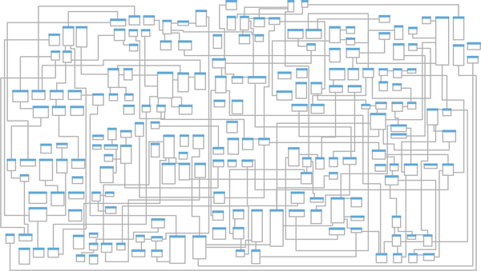
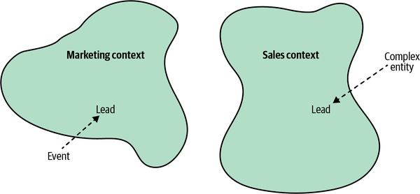
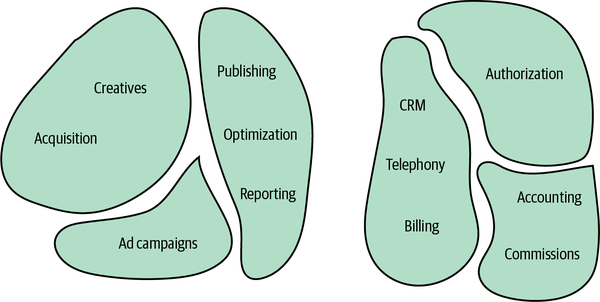
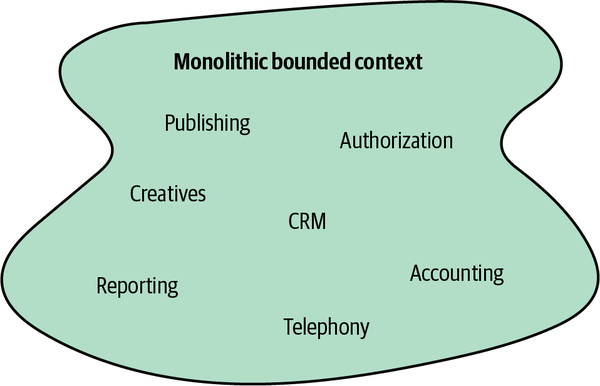
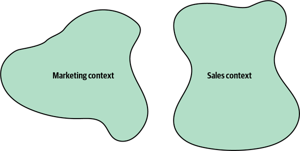
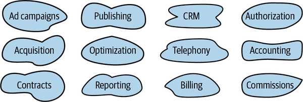
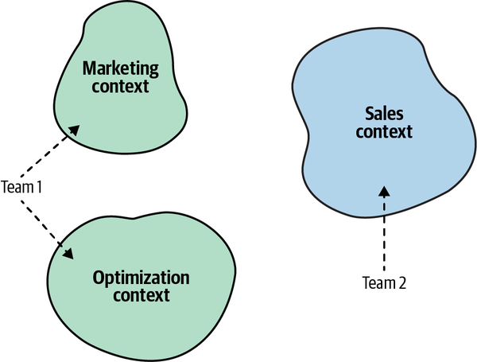

As you saw in the previous chapter, to ensure a project’s success it’s crucial that you develop a ubiquitous language that can be used for communication by all stakeholders, from software engineers to domain experts. The language should reflect the domain experts’ mental models of the business domain’s inner workings and underlying principles.
Since our goal is to use ubiquitous language to drive software design decisions, the language must be clear and consistent. It should be free of ambiguity, implicit assumptions, and extraneous details. However, on an organizational scale, the domain experts’ mental models can be inconsistent themselves. Different domain experts can use different models of the same business domain. Let’s take a look at an example.
Let’s go back to the example of a telemarketing company from Chapter 2. The company’s marketing department generates leads through online advertisements. Its sales department is in charge of soliciting prospective customers to buy its products or services, a chain that is shown in Figure 3-1.
An examination of the domain experts’ language reveals a peculiar observation. The term lead has different meanings in the marketing and sales departments:
How do we formulate a ubiquitous language in the case of this telemarketing company?
On the one hand, we know the ubiquitous language has to be consistent—each term should have one meaning. On the other hand, we know the ubiquitous language has to reflect the domain experts’ mental models. In this case, the mental model of the “lead” is inconsistent among the domain experts in the sales and marketing departments.
This ambiguity doesn’t present that much of a challenge in person-to-person communications. Indeed, communication can be more challenging among people from different departments, but it’s easy enough for humans to infer the exact meaning from the interaction’s context.
However, it is more difficult to represent such a divergent model of the business domain in software. Source code doesn’t cope well with ambiguity. If we were to bring the sales department’s complicated model into marketing, it would introduce complexity where it’s not needed— far more detail and behavior than marketing people need for optimizing advertising campaigns. But if we were to try to simplify the sales model according to the marketing world view, it wouldn’t fit the sales subdomain’s needs, because it’s too simplistic for managing and optimizing the sales process. We’d have an overengineered solution in the first case and an under-engineered one in the second.
How do we solve this catch-22?
The traditional solution to this problem is to design a single model that can be used for all kinds of problems. Such models result in enormous entity relationship diagrams (ERDs) spanning whole office walls. Is Figure 3-2 an effective model?

As the saying goes, “jack of all trades, master of none.” Such models are supposed to be suitable for everything but eventually are effective for nothing. No matter what you do, you are always facing complexity: the complexity of filtering out extraneous details, the complexity of finding what you do need, and most importantly, the complexity of keeping the data in a consistent state.
Another solution would be to prefix the problematic term with a definition of the context: “marketing lead” and “sales lead.” That would allow the implementation of the two models in code. However, this approach has two main disadvantages. First, it induces cognitive load. When should each model be used? The closer the implementations of the conflicting models are, the easier it is to make a mistake. Second, the implementation of the model won’t be aligned with the ubiquitous language. No one would use the prefixes in conversations. People don’t need this extra information; they can rely on the conversation’s context.
Let’s turn to the domain-driven design pattern for tackling such scenarios: the bounded context pattern.
The solution in domain-driven design is trivial: divide the ubiquitous language into multiple smaller languages, then assign each one to the explicit context in which it can be applied: its bounded context.
In the preceding example, we can identify two bounded contexts: marketing and sales. The term lead exists in both bounded contexts, as shown in Figure 3-3. As long as it bears a single meaning in each bounded context, each fine-grained ubiquitous language is consistent and follows the domain experts’ mental models.

In a sense, terminology conflicts and implicit contexts are an inherent part of any decent-sized business. With the bounded context pattern, the contexts are modeled as an explicit and integral part of the business domain.
As we discussed in the previous chapter, a model is not a copy of the real world but a construct that helps us make sense of a complex system. The problem it is supposed to solve is an inherent part of a model—its purpose. A model cannot exist without a boundary; it will expand to become a copy of the real world. That makes defining a model’s boundary—its bounded contexts—an intrinsic part of the modeling process.
Let’s go back to the example of maps as models. We saw that each map has its specific context—aerial, nautical, terrain, subway, and so on. A map is useful and consistent only within the scope of its specific purpose.
Just as a subway map is useless for nautical navigation, a ubiquitous language in one bounded context can be completely irrelevant to the scope of another bounded context. Bounded contexts define the applicability of a ubiquitous language and of the model it represents. They allow defining distinct models according to different problem domains. In other words, bounded contexts are the consistency boundaries of ubiquitous languages. A language’s terminology, principles, and business rules are only consistent inside its bounded context.
Bounded contexts allow us to complete the definition of a ubiquitous language. A ubiquitous language is not “ubiquitous” in the sense that it should be used and applied “ubiquitously” throughout the organization. A ubiquitous language is not universal.
Instead, a ubiquitous language is ubiquitous only in the boundaries of its bounded context. The language is focused on describing only the model that is encompassed by the bounded context. As a model cannot exist without a problem it is supposed to address, a ubiquitous language cannot be defined or used without an explicit context of its applicability.
The example at the beginning of the chapter demonstrated an inherent boundary of the business domain. Different domain experts held conflicting mental models of the same business entity. To model the business domain, we had to divide the model and define a strict applicability context for each fine-grained model—its bounded context.
The consistency of the ubiquitous language only helps to identify the widest boundary of that language. It cannot be any larger, because then there will be inconsistent models and terminology. However, we can still further decompose the models into even smaller bounded contexts, as shown in Figure 3-4.

Defining the scope of a ubiquitous language—its bounded context—is a strategic design decision. Boundaries can be wide, following the business domain’s inherent contexts, or narrow, further dividing the business domain into smaller problem domains.
A bounded context’s size, by itself, is not a deciding factor. Models shouldn’t necessarily be big or small. Models need to be useful. The wider the boundary of the ubiquitous language is, the harder it is to keep it consistent. It may be beneficial to divide a large ubiquitous language into smaller, more manageable problem domains, but striving for small bounded contexts can backfire too. The smaller they are, the more integration overhead the design induces.
Hence, the decision for how big your bounded contexts should depend on the specific problem domain. Sometimes, using a wide boundary will be clearer, while at other times, decomposing it further will make more sense.
The reasons for extracting finer-grained bounded contexts out of a larger one include constituting new software engineering teams or addressing some of the system’s nonfunctional requirements; for example, when you need to separate the development lifecycles of some of the components originally residing in a single bounded context. Another common reason for extracting one functionality is the ability to scale it independently from the rest of the bounded context’s functionalities.
Therefore, keep your models useful and align the bounded contexts’ sizes with your business needs and organizational constraints. One thing to beware of is splitting a coherent functionality into multiple bounded contexts. Such division will hinder the ability to evolve each context independently. Instead, the same business requirements and changes will simultaneously affect the bounded contexts and require simultaneous deployment of the changes. To avoid such ineffective decomposition, use the rule of thumb we discussed in Chapter 1 to find subdomains: identify sets of coherent use cases that operate on the same data and avoid decomposing them into multiple bounded contexts.
We’ll discuss the topic of continuously optimizing the bounded contexts’ boundaries further in Chapters 8 and 10.
In Chapter 2, we saw that a business domain consists of multiple subdomains. So far in this chapter, we explored the notion of decomposing a business domain into a set of fine-grained problem domains or bounded contexts. At first, the two methods of decomposing business domains might seem redundant. However, that’s not the case. Let’s examine why we need both boundaries.
To comprehend a company’s business strategy, we have to analyze its business domain. According to domain-driven design methodology, the analysis phase involves identifying the different subdomains (core, supporting, and generic). That’s how the organization works and plans its competitive strategy.
As you learned in Chapter 1, a subdomain resembles a set of interrelated use cases. The use cases are defined by the business domain and the system’s requirements. As software engineers, we do not define the requirements; that’s the responsibility of the business. Instead, we are analyzing the business domain to identify the subdomains.
Bounded contexts, on the other hand, are designed. Choosing models’ boundaries is a strategic design decision. We decide how to divide the business domain into smaller, manageable problem domains.
Theoretically, though impractically, a single model could span the entire business domain. This strategy could work for a small system, as shown in Figure 3-5.

When conflicting models arise, we can follow the domain experts’ mental models and decompose the systems into bounded contexts, as shown in Figure 3-6.

If the models are still large and hard to maintain, we can decompose them into even smaller bounded contexts; for example, by having a bounded context for each subdomain, as shown in Figure 3-7.

Either way, this is a design decision. We design those boundaries as a part of the solution.
Having a one-to-one relationship between bounded contexts and subdomains can be perfectly reasonable in some scenarios. In others, however, different decomposition strategies can be more suitable.
It’s crucial to remember that subdomains are discovered and bounded contexts are designed.1 The subdomains are defined by the business strategy. However, we can design the software solution and its bounded contexts to address the specific project’s context and constraints.
Finally, as you learned in Chapter 1, a model is intended to solve a specific problem. In some cases, it can be beneficial to use multiple models of the same concept simultaneously to solve different problems. As different types of maps provide different types of information about our planet, it may be reasonable to use different models of the same subdomain to solve different problems. Limiting the design to one-to-one relationships between bounded contexts would inhibit this flexibility and force us to use a single model of a subdomain in its bounded context.
As Ruth Malan says, architectural design is inherently about boundaries:
Architectural design is system design. System design is contextual design—it is inherently about boundaries (what’s in, what’s out, what spans, what moves between), and about trade-offs. It reshapes what is outside, just as it shapes what is inside.2
The bounded context pattern is the domain-driven design tool for defining physical and ownership boundaries.
Bounded contexts serve not only as model boundaries but also as physical boundaries of the systems implementing them. Each bounded context should be implemented as an individual service/project, meaning it is implemented, evolved, and versioned independently of other bounded contexts.
Clear physical boundaries between bounded contexts allow us to implement each bounded context with the technology stack that best fits its needs.
As we discussed earlier, a bounded context can contain multiple subdomains. In such a case, the bounded context is a physical boundary, while each of its subdomains is a logical boundary. Logical boundaries bear different names in different programming languages: namespaces, modules, or packages.
Studies show that good fences do indeed make good neighbors. In software projects, we can leverage model boundaries—bounded contexts—for the peaceful coexistence of teams. The division of work between teams is another strategic decision that can be made using the bounded context pattern.
A bounded context should be implemented, evolved, and maintained by one team only. No two teams can work on the same bounded context. This segregation eliminates implicit assumptions that teams might make about one another’s models. Instead, they have to define communication protocols for integrating their models and systems explicitly.
It’s important to note that the relationship between teams and bounded contexts is one-directional: a bounded context should be owned by only one team. However, a single team can own multiple bounded contexts, as Figure 3-8 illustrates.

In one of my domain driven-design classes, a participant once noted: “You said that DDD is about aligning software design with business domains. But where are the bounded contexts in real life? There are no bounded contexts in business domains.”
Indeed, bounded contexts are not as evident as business domains and subdomains, but they are there, as domain experts’ mental models are. You just have to be conscious about how domain experts think about the different business entities and processes.
I want to close this chapter by discussing examples demonstrating that not only are bounded contexts there when we are modeling business domains in software, but the notion of using different models in different contexts is widespread in life in general.
It can be said that domain-driven design’s bounded contexts are based on the lexicographical notion of semantic domains. A semantic domain is defined as an area of meaning and the words used to talk about it. For example, the words monitor, port, and processor have different meanings in the software and hardware engineering semantic domains.
A rather peculiar example of different semantic domains is the meaning of the word tomato.
According to the botanic definition, a fruit is the plant’s way of spreading its seeds. A fruit should grow from the plant’s flower, and bear at least one seed. A vegetable, on the other hand, is a general term encompassing all other edible parts of a plant: roots, stems, and leaves. Based on this definition, the tomato is a fruit.
That definition, however, is of little use in the context of the culinary arts. In this context, fruits and vegetables are defined based on their flavor profiles. A fruit has a soft texture, is either sweet or sour, and can be enjoyed in its raw form, whereas a vegetable has a tougher texture, tastes blander, and often requires cooking. According to this definition, the tomato is a vegetable.
Hence, in the bounded context of botany, the tomato is a fruit, while in the bounded context of the culinary arts, it’s a vegetable. But that’s not all.
In 1883 the United States established a 10% tax on imported vegetables, but not fruits. The botanic definition of the tomato as a fruit allowed the importation of tomatoes to the United States without paying the import tax. To close the loophole, in 1893 the United States Supreme Court made the decision to classify the tomato as a vegetable. Therefore, in the bounded context of taxation, the tomato is a vegetable.
Furthermore, as my friend Romeu Moura says, in the bounded context of theatrical performances, the tomato is a feedback mechanism.
As historian Yuval Noah Harari puts it, “Scientists generally agree that no theory is 100 percent correct. Thus, the real test of knowledge is not the truth, but utility.” In other words, no scientific theory is correct in all cases. Different theories are useful in different contexts.
This notion can be demonstrated by the different models of gravity introduced by Sir Isaac Newton and Albert Einstein. According to Newton’s laws of motion, space and time are absolute. They are the stage on which the motion of objects happens. In Einstein’s theory of relativity, space and time are no longer absolute but different for different observers.
Even though the two models can be seen as contradictory, both are useful in their suitable (bounded) contexts.
Finally, let’s see a more earthbound example of real-life bounded contexts. What do you see in Figure 3-9?
Is it just a piece of cardboard? No, it’s a model. It’s a model of the Siemens KG86NAI31L refrigerator. If you look it up, you may say the piece of cardboard doesn’t look anything like that fridge. It has no doors, and even its color is different.
Although that’s true, it’s not relevant. As we’ve discussed, a model is not supposed to copy a real-world entity. Instead, it should have a purpose—a problem it is supposed to solve. Hence, the correct question to ask about the cardboard is, what problem does this model solve?
In our apartment, we do not have a standard entry into the kitchen. The cardboard was cut precisely to the size of the fridge’s width and depth. The problem it solves is checking whether the refrigerator can fit through the kitchen door (see Figure 3-10).
Despite the cardboard not looking anything like the fridge, it proved extremely useful when we had to decide whether to buy this model or opt for a smaller one. Again, all models are wrong, but some are useful. Building a 3D model of the fridge would definitely be a fun project. But would it solve the problem any more efficiently than the cardboard? No. If the cardboard fits, the 3D model would fit as well, and vice versa. In software engineering terms, building a 3D model of the fridge would be gross overengineering.
But what about the refrigerator’s height? What if the base fits, but it’s too tall to fit in the doorway? Would that justify gluing together a 3D model of the fridge? No. The problem can be solved much more quickly and easily by using a simple tape measure to check the doorway’s height. What is a tape measure in this case? Another simple model.
So, we ended up with two models of the same fridge. Using two models, each optimized for its specific task, reflects the DDD approach to modeling business domains. Each model has its strict bounded context: the cardboard verifying that the refrigerator’s base can make it through the kitchen’s entry, and the tape measure verifying that it’s not too tall. A model should omit the extraneous information irrelevant to the task at hand. Also, there’s no need to design a complex jack-of-all-trades model if multiple, much simpler models can effectively solve each problem individually.
A few days after I published this story on Twitter, I received a reply saying that instead of fiddling with cardboard, I could have just used a mobile phone with a LiDAR scanner and an augmented reality (AR) application. Let’s analyze this suggestion from the domain-driven design perspective.
The author of the comment says this is a problem that others have already solved, and the solution is readily available. Needless to say, both the scanning technology and the AR application are complex. In DDD lingo, that makes the problem of checking whether the refrigerator will fit through the doorway a generic subdomain.
Whenever we stumble upon an inherent conflict in the domain experts’ mental models, we have to decompose the ubiquitous language into multiple bounded contexts. A ubiquitous language should be consistent within the scope of its bounded context. However, across bounded contexts, the same terms can have different meanings.
While subdomains are discovered, bounded contexts are designed. The division of the domain into bounded contexts is a strategic design decision.
A bounded context and its ubiquitous language can be implemented and maintained by one team. No two teams can share the work on the same bounded context. However, one team can work on multiple bounded contexts.
Bounded contexts decompose a system into physical components—services, subsystems, and so on. Each bounded context’s lifecycle is decoupled from the rest. Each bounded context can evolve independently from the rest of the system. However, the bounded contexts have to work together to form a system. Some of the changes will inadvertently affect another bounded context. In the next chapter, we’ll talk about the different patterns for integrating bounded contexts that can be used to protect them from cascading changes.
What is the difference between subdomains and bounded contexts?
Subdomains are designed, while bounded contexts are discovered.
Bounded contexts are designed, while subdomains are discovered.
Bounded contexts and subdomains are essentially the same.
A bounded context is a boundary of [select all that apply]:
A model
A lifecycle
Ownership
All of the above
Which of the following is true regarding the size of a bounded context?
The smaller the bounded context is, the more flexible the system is.
Bounded contexts should always be aligned with the boundaries of subdomains.
The wider the bounded context is, the better.
It depends on the project’s context.
Which of the following is true regarding team ownership of a bounded context? Select all that apply.
Multiple teams can work on the same bounded context.
A single team can own multiple bounded contexts.
A bounded context can be owned by one team only.
Both B and C
Both A and B
Try to find examples of real-life bounded contexts, in addition to those described in this chapter.
1 There is an exception here that is worth mentioning. Depending on the organization you are working in, you may be wearing two hats and be in charge of both software engineering and business development. As a result, you have the ability to affect both the software design (bounded contexts) and the business strategy (subdomains). Therefore, in the (bounded) context of our discussion here, we are focusing only on software engineering.
2 Bredemeyer Consulting, “What Is Software Architecture.” Retrieved September 22, 2021, https://www.bredemeyer.com/who.htm